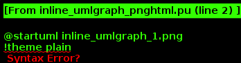
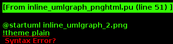
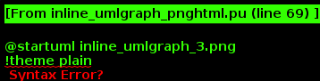
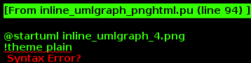

|
ESP32 Traffic Light - Interrupt System 2.4
Multi-interrupt priority demonstration on ESP32 - RUS Lab 1
|
Multi-interrupt priority demonstration on ESP32 for RUS-TVZ Lab 1.
This project demonstrates hardware interrupts, timer interrupts, and an ultrasonic distance sensor controlling two traffic lights at a simulated intersection.
| Priority | Source | Action |
|---|---|---|
| Highest | Button (GPIO) | Blinking yellow for both traffic lights |
| Medium | Distance sensor | Forces opposite state on TL-B |
| Lowest | Timer (hw ISR) | Normal state machine cycle |



